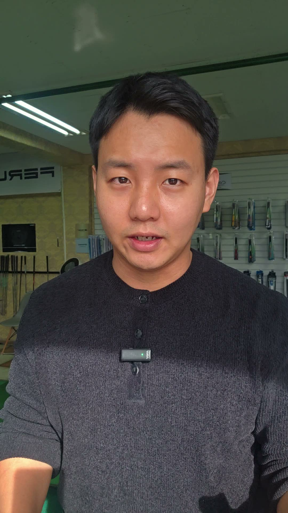
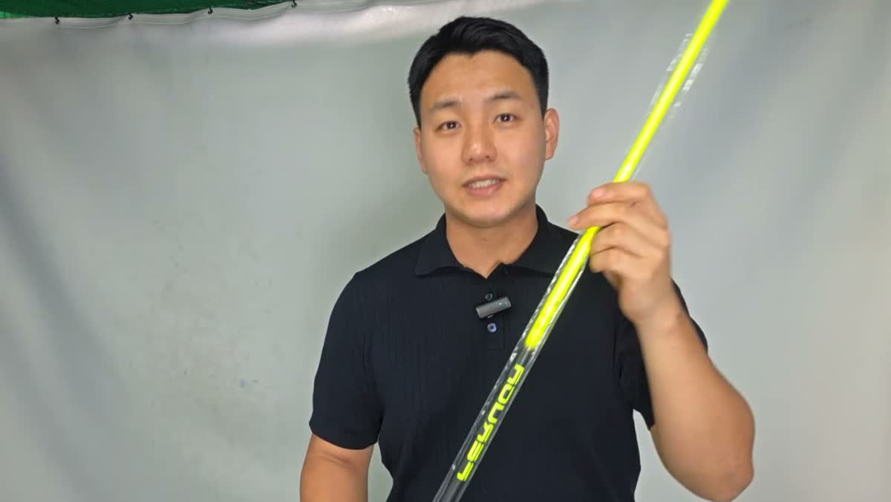
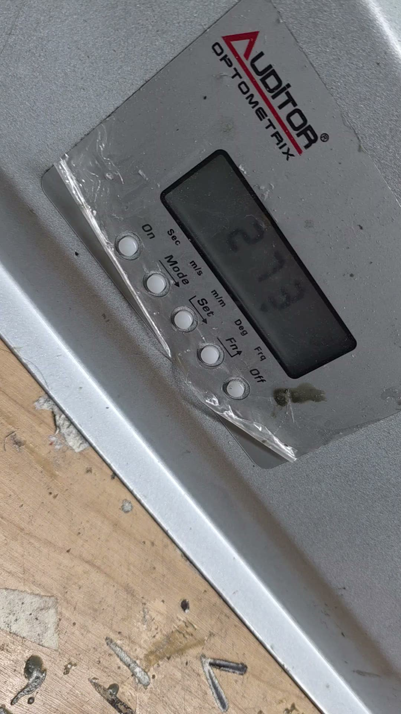
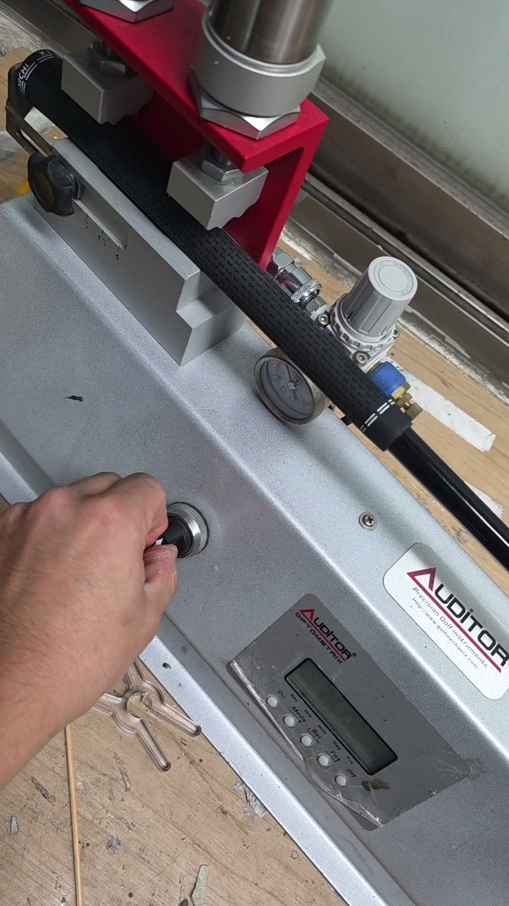
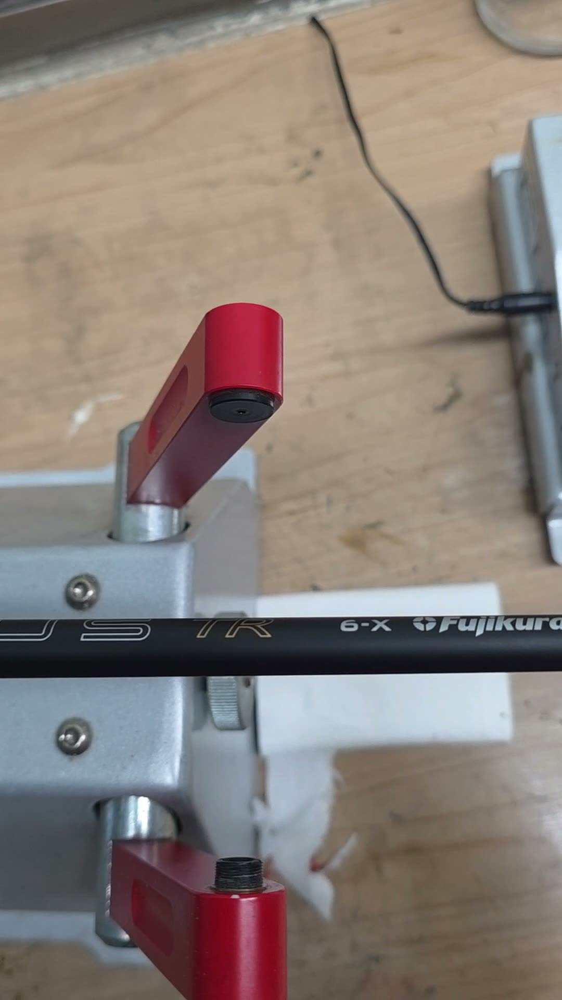
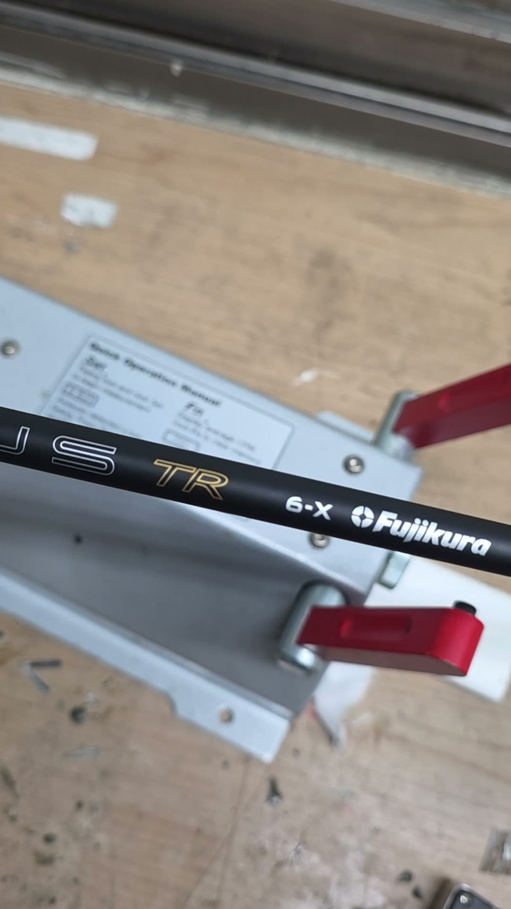

청주 골프피팅 시몬골프피팅
충북 청주시 흥덕구 봉명동
골프장 가기 전날 불안한 분부터 대회 나가는 분까지
오늘도 숫자로 채를 맞추고 있습니다.
Why Simon
시몬골프피팅은 바꾸기 전에
세 가지를 먼저 잽니다.
1스윙을 잽니다
GC쿼드로 볼 스피드, 발사각, 스핀, 캐리를 잽니다. 슬라이스가 스윙 탓인지 샤프트 탓인지 말이 아니라 숫자로 먼저 봅니다.
2샤프트를 잽니다
같은 S라도 브랜드마다 강도가 다릅니다. CPM 측정기로 샤프트 진동수를 재고, 스펙별 시타 샤프트를 직접 쳐보고 고릅니다.
3무게를 잽니다
그립 하나만 바꿔도 스윙웨이트가 달라집니다. 그래서 작업 전과 후에 꼭 둘 다 재고, 확인한 뒤에 드립니다.
In the Shop
말로 고르지 않습니다.
재보고 고릅니다.
시몬골프피팅 작업대에서 실제로 찍은 장면입니다.




Who comes
이런 고민으로 오십니다
대부분 채보다 샤프트·그립·무게가 안 맞는 경우입니다.
고민 1
드라이버가 자꾸 휘어요
슬라이스·훅이 스윙 탓인지 샤프트 탓인지 먼저 재봅니다.
고민 2
비거리가 줄었어요
볼 스피드, 발사각, 스핀을 보고 거리가 새는 곳을 찾습니다.
고민 3
샤프트 강도를 모르겠어요
R, SR, S를 말로 고르지 않고 직접 쳐보고 숫자로 고릅니다.
고민 4
짧은 퍼팅이 불안해요
암락퍼터 제작과 퍼터 길이·무게 조정을 합니다.
Process
피팅은 이렇게 진행됩니다
보통 40분~1시간 걸립니다.
- 상담지금 쓰는 채, 구질, 고민, 연습 빈도를 먼저 듣습니다.
- 내 채로 측정GC쿼드로 지금 상태를 재고, 스윙웨이트도 재 둡니다.
- 시타 비교토탈핏 슬리브로 같은 헤드에 여러 샤프트를 끼워 칩니다.
- 숫자로 고르기측정값이 좋아진 샤프트를 고객과 같이 고릅니다.
- 작업·재측정장착 후 스윙웨이트와 길이를 다시 재고 드립니다.
Price
서비스와 가격
샤프트·그립 가격은 모델마다 달라 상담 때 안내합니다.
모든 카드 결제 가능 · 2026년 11월 기준
Guarantee
쳐보니 안 맞으면
바꿔 드립니다.
샤프트는 매장에서 맞아도 필드에서 다를 수 있습니다.
그래서 사고 나서 쳐볼 시간을 드립니다.
파손품은 강도 교환이 안 되고, 스크래치는 감가될 수 있습니다. 버트·미드 파손은 판매가의 50%입니다.
Real Cases
손님이 직접 하신 말
암락퍼터를 제작해 간 분들의 이야기입니다.
암락퍼터로 바꾸고 아마추어 대회에서 처음으로 언더파를 쳐 우승했습니다.
암락퍼터 제작 고객짧은 퍼팅이 편해져서 80대 타수를 유지하고 있습니다.
암락퍼터 제작 고객더 많은 후기는 인스타그램 @sm_golffitting 하이라이트 '고객 후기'에 있습니다.
Philosophy
시몬골프피팅 대표 철학
파는 사람보다
재는 사람이 되겠습니다.
시몬골프피팅은 대표가 혼자 운영합니다. 상담부터 측정, 작업, 마지막 확인까지 한 사람이 직접 책임집니다. 아버지가 골프채 도소매와 피팅을 해 오셨고, 그 일을 이어 2대째 골프채를 만지고 있습니다.
- 대표 이심온 (시몬)
- 한국골프피팅협회(KGFA) 회원
- 정세희 프로 · 주승관 프로(청주 레슨프로)와 협업
FAQ
자주 묻는 질문
청주에서 골프 피팅은 어디서 받을 수 있나요?
시몬골프피팅은 청주시 흥덕구 봉명동(백봉로 214 2층)에 있는 골프피팅 전문점입니다. GC쿼드 런치모니터로 볼 스피드, 발사각, 스핀을 재고, 스펙별 시타 샤프트를 직접 쳐본 뒤 맞는 샤프트를 고릅니다. 월~토 10:30~19:30 운영, 전화 010-7173-4723.
골프 피팅 비용은 얼마인가요?
GC쿼드 측정 시타비는 3만 원이고, 그날 샤프트나 작업을 구매하면 시타비는 차감됩니다. 샤프트 커팅은 2만 원입니다. 샤프트·그립 가격은 모델마다 달라 상담 때 안내합니다.
피팅을 받으면 새 골프채를 꼭 사야 하나요?
아닙니다. 시몬골프피팅은 채 교체를 권하지 않습니다. 지금 쓰는 헤드는 그대로 두고 샤프트, 그립, 스윙웨이트만 맞춰도 달라지는 경우가 많습니다. 토탈핏 슬리브로 타이틀리스트, 핑, 캘러웨이, 테일러메이드, 미즈노, 코브라, PXG 헤드에 여러 샤프트를 바로 끼워 쳐볼 수 있습니다.
샤프트를 바꿨는데 안 맞으면 교환되나요?
됩니다. 받은 날부터 14일 안에 1회, 같은 모델 안에서 강도만 바꿔 드립니다. 고객은 택배비만 내고 재작업비는 없습니다. 파손은 교환이 안 되고, 스크래치는 감가될 수 있습니다. A/S는 1년이며 팁 파손은 무상 교환입니다.
점보맥스 그립은 정품인가요?
네. 시몬골프피팅은 점보맥스 그립을 본사에서 직접 수입합니다. 가품 걱정이 없고, 매장에서 끼워보고 쳐본 뒤 고를 수 있습니다.
주차할 수 있나요?
매장 뒤편에 전용주차장이 있습니다. 매장은 2층이고, 휠체어 출입은 어렵습니다.
일요일에도 피팅 받을 수 있나요?
일요일은 휴무입니다. 다만 미리 예약하면 일요일에도 출근해 피팅해 드립니다. 네이버 예약이나 전화(010-7173-4723)로 문의해 주세요.
Location
오시는 길
- 상호
- 시몬골프피팅 (시몬골프)
- 주소
- 충북 청주시 흥덕구 백봉로 214 2층
지번: 봉명동 1984 2층 - 영업시간
- 월~토 10:30~19:30
일요일 휴무 (예약 시 가능) - 전화
- 010-7173-4723
- 주차
- 매장 뒤편 전용주차장
- 결제
- 모든 카드 가능